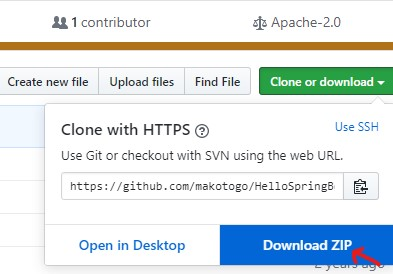
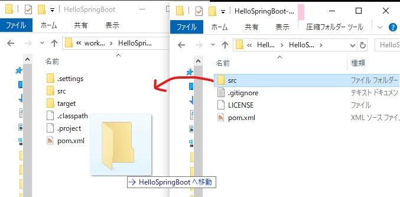
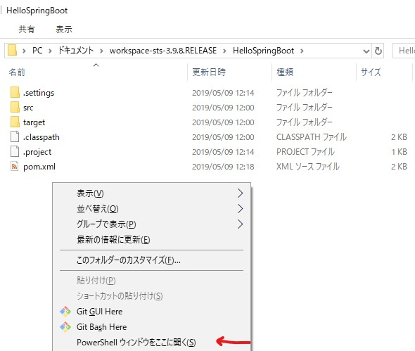

前提
とにかくサーバーを立ち上げる事を目的に SpringBootの基礎 の"Hello, World!"の手順で詰まる所を記述していきます。
とにかくサーバーを立ち上げる事を目的に SpringBootの基礎 の"Hello, World!"の手順で詰まる所を記述していきます。
STS(Eclipse)の起動の際にワークスペースを確認する。デフォルトは以下の通り
C:\Users\ユーザ名\Documents\workspace-sts-3.9.8.RELEASE
Hello, World冒頭で紹介されているサンプルコードを githubから入手します。 こちら
ダウンロードしたら解凍して
自分のワークスペースのsrcフォルダを解凍したsrcフォルダで上書きして下さい。 (※srcには表示するページのデータ等が入ってます。)
指示に従い
<dependencies>
<dependency>
<groupId>org.springframework.boot</groupId>
<artifactId>spring-boot-starter-web</artifactId>
</dependency>
<dependency>
<groupId>junit</groupId>
<artifactId>junit</artifactId>
<scope>test</scope>
</dependency>
</dependencies>
PCが実行できる様にビルドしてjarファイルを生成します。 ここの内容は指示通りです。 コマンド・ラインからビルドするは無視して構いません。
以前TomcatをStartしている場合はStopしておきます。 エクスプローラーでワークスペースを開き "Shift+右クリック">"PowerShellウィンドウをここに開く"
java -jar target/HelloSpringBoot-1.0-SNAPSHOT.jar
を実行。
後は指示通りです。
指示通りです。